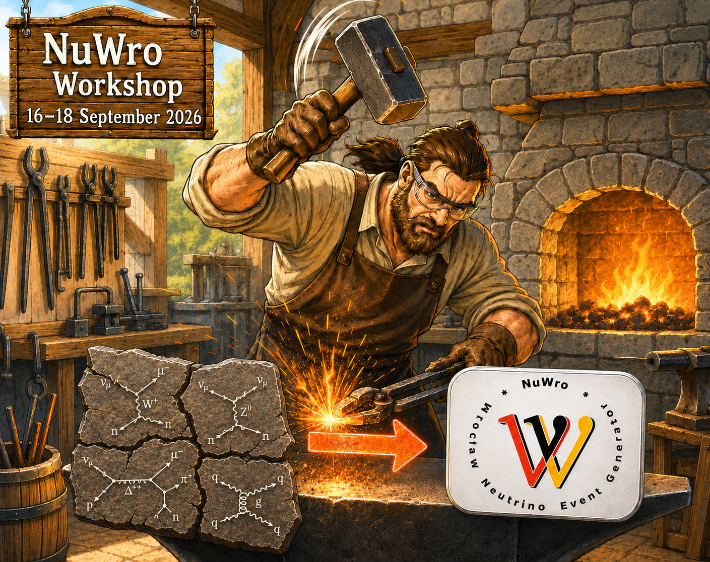

Wrocław · 16–18 September 2026
NuWro Workshop
Although the workshop bears the NuWro name, its scope will be broader, focusing on general aspects of modeling neutrino interactions.
The reference to NuWro in the title reflects a broader goal of the neutrino interaction community: the development of improved models suitable for implementation in Monte Carlo generators, thereby supporting the success of current and future neutrino oscillation experiments.
At the same time, the workshop will provide an excellent opportunity to present recent efforts to enhance the quality of the physics models implemented in NuWro.
- Co-chairs
- Natalie Jachowicz, Xianguo Lu, Jan Sobczyk
- Contact
- jan.sobczyk@uwr.edu.pl

Workshop location
Venue
Faculty of Physics and Astronomy
University of Wrocław
plac Maxa Borna 9, Wrocław
Room 422
As of 23 July 2026
Participants
Luis BonillaWrocław
Paloma CasaleGranada
Rwik Dharmapal BanerjeeWrocław
Mathias El BazGeneva
Raul Gonzalez-JimenezSeville
Krzysztof GraczykWrocław
Cezary JuszczakWrocław
Natalie JachowiczGhent
Beata KowalWrocław
Xianguo LuWarwick
Kajetan NiewczasParis
Alexis NikolakopoulosSeattle
Hemant PrasadWrocław
Federico SanchezGeneva
Jan SobczykWrocław
Joanna SobczykGoeteborg
Cesar Jesus VallsGeneva
Clarence WretLondon
Qiyu YanBeijing
Preliminary programme
Tentative timetable
The current workshop programme is available as a PDF.
For invited participants
Accommodation
Invited participants will be accommodated at the Art Hotel,
Kiełbaśnicza 20, 50-110 Wrocław.